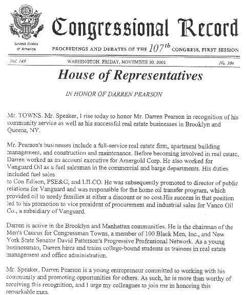

U.S. House of Representatives · 2001
A Tribute in the Congressional Record
“Darren Pearson is a young entrepreneur committed to working with his community and promoting opportunities for others… I urge my colleagues to join me in honoring this remarkable man.”
— Congressman Edolphus Towns, on the House floor
On the floor of the U.S. House of Representatives, Congressman Edolphus Towns recognized Darren K. Pearson for his community service and his real estate businesses across Brooklyn and Queens.